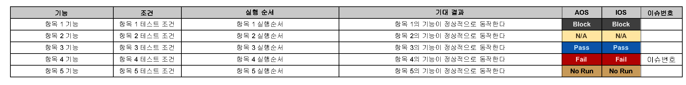
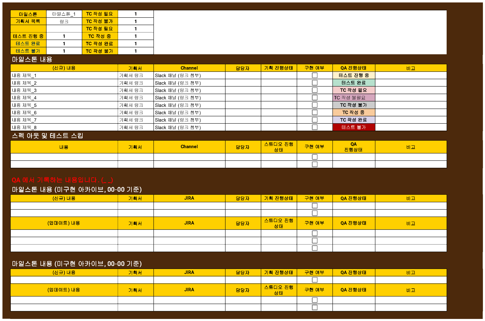
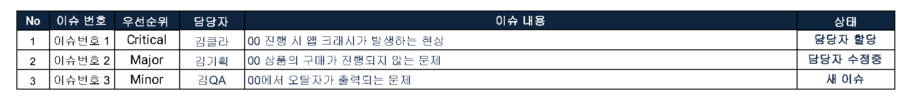

개발 PM · 개발 QA
테스트에서 발견한 이슈가 처리로 이어지도록
기획 의도와 실제 구현 결과를 비교하며 테스트 시나리오를 설계하고, 테스트를 진행해 결과를 보고했습니다.
Jira에 등록된 이슈가 처리되는 과정도 함께 확인했습니다.
개발 QA 주요 업무
테스트 설계와 실행, 결과 보고부터 이슈 처리 절차와 현황 관리까지 담당했습니다.
- 테스트 시나리오 계획·설계
- 기획 의도와 검증할 내용을 정리해 테스트 시나리오를 계획하고 설계했습니다.
구현 결과를 비교할 기준을 마련하고 테스트 진행에 활용했습니다. - 기획 대비 기능·구현 검증
- 설계한 시나리오를 바탕으로 테스트를 진행하고, 기획 의도와 실제 구현 결과를 비교해 이상 여부를 확인했습니다.
- 테스트 결과 보고·이슈 공유
- 테스트에서 확인한 내용을 결과로 정리해 보고했습니다.
발견한 문제를 공유하고 Jira에 등록된 이슈의 처리 상태를 함께 확인했습니다. - Jira 이슈 처리 절차 개선
- 담당자 미지정 이슈가 방치되는 문제를 확인하고, 상태별 워크플로우와 담당자 할당 단계를 4단계로 세분화했습니다.
단계별 담당자를 지정하고 변경한 절차를 개발실에 공유했습니다. - 이슈 현황 대시보드 구축
- Jira 이슈 현황판 대시보드를 제작해 등록된 이슈의 상태를 확인할 수 있도록 했습니다.
테스트 결과 보고와 이슈 현황 확인을 함께 수행했습니다.
QA 업무 문서
테스트 케이스와 QA 진행 현황을 정리하기 위해 만든 업무 양식입니다.
테스트 조건부터 결과 기록까지
기능별로 테스트 조건과 실행 순서, 기대 결과를 한 행에 정리했습니다.
AOS·iOS 결과를 각각 기록하고, 발견한 문제는 이슈 번호로 연결하도록 구성했습니다.

구현 여부와 테스트 진행 상태
기획서와 협업 채널, 담당자, 구현 여부를 QA 진행 상태와 함께 확인하는 현황판입니다.
TC 작성 필요·작성 중·작성 완료와 테스트 진행 중·완료·불가를 구분했습니다.

QA 결과와 잔여 이슈 보고
TC 결과를 Pass·Fail·Block·N/A로 나누어 보고하고, 남은 이슈는 우선순위와 담당자, 처리 상태를 함께 확인하도록 만든 보고서 양식입니다.
아래는 보고서 안에서 잔여 이슈를 정리하는 영역입니다.

Jira 이슈 처리 사례
등록됐지만 담당자가 없는 이슈
Jira에 등록된 이슈 중 담당자가 지정되지 않은 채 남아 있는 이슈가 1천 건을 넘었습니다.
이슈를 등록하는 것만으로는 처리가 이어지지 않아, 상태별 처리 규칙과 담당자를 함께 정리할 필요가 있었습니다.
상태를 나누고, 단계마다 담당자를 지정
이슈 상태에 따른 워크플로우를 세분화하고, 담당자 할당 단계를 4단계로 나눴습니다.
각 단계에 담당자를 지정한 뒤 변경된 워크플로우를 개발실에 공유했습니다.
- 상태별 흐름 검토이슈 상태에 따른 워크플로우 개선
- 워크플로우 세분화담당자 할당 단계를 4단계로 구분
- 단계별 담당자 지정각 처리 단계에 담당자 연결
- 개발실 공유변경한 처리 흐름 전달
상태와 담당자를 함께 확인
변경 후에는 이슈의 상태와 다음 담당자를 확인할 수 있었습니다.
담당자 없이 방치되던 이슈도 더 이상 발생하지 않았습니다.
PM 관점
오류 확인 이후의 처리 흐름까지
테스트로 문제를 찾는 일과, 등록한 이슈가 처리되도록 정리하는 일은 연결돼 있었습니다.
상태를 세분화할 때도 다음 단계에서 누가 확인할지 함께 정리해야 했습니다.